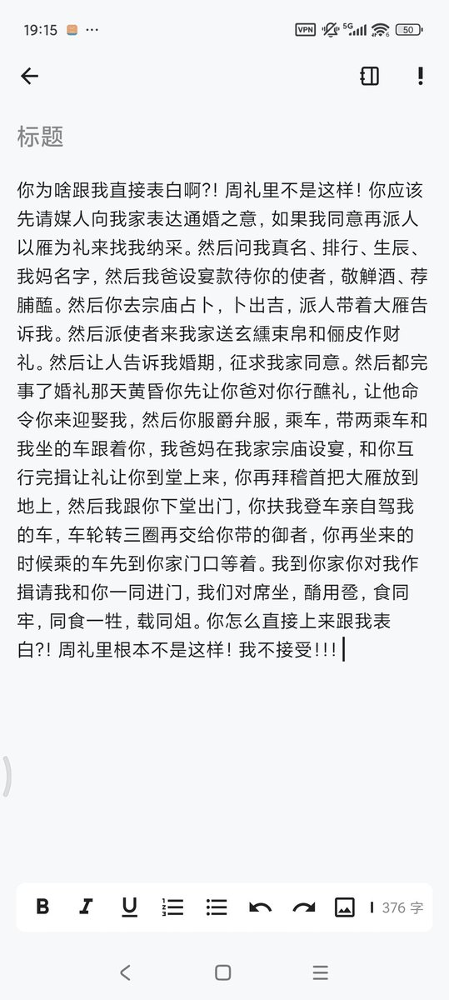

Τειρεσίας✝️
@Robert_Bumaro11
RT @Nineyinnnnnnnn: 你为啥跟我直接表白啊？！周礼里不是这样！你应该先请媒人向我家表达通婚之意，如果我同意再派人以雁为礼来找我纳采。然后问我真名、排行、生辰、我妈名字，然后我爸设宴款待你的使者，敬觯酒、荐脯醢。

九隱🌱牧者鴿於途
@Nineyinnnnnnnn
你为啥跟我直接表白啊？！周礼里不是这样！你应该先请媒人向我家表达通婚之意，如果我同意再派人以雁为礼来找我纳采。然后问我真名、排行、生辰、我妈名字，然后我爸设宴款待你的使者，敬觯酒、荐脯醢。 https://t.co/vuC2fQB06V